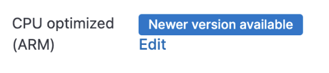
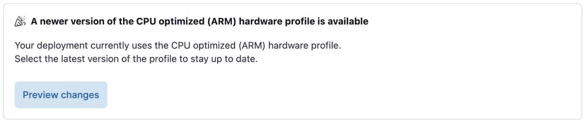
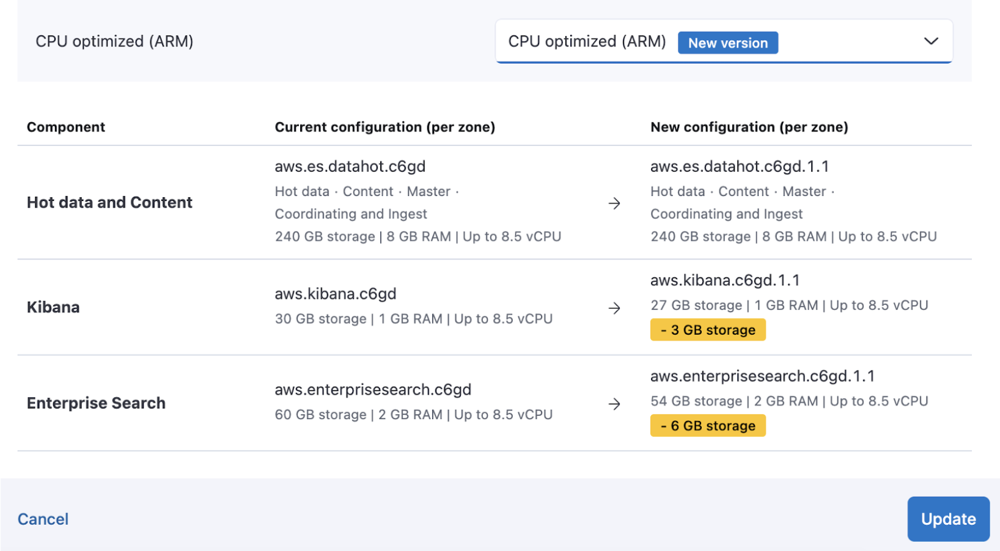
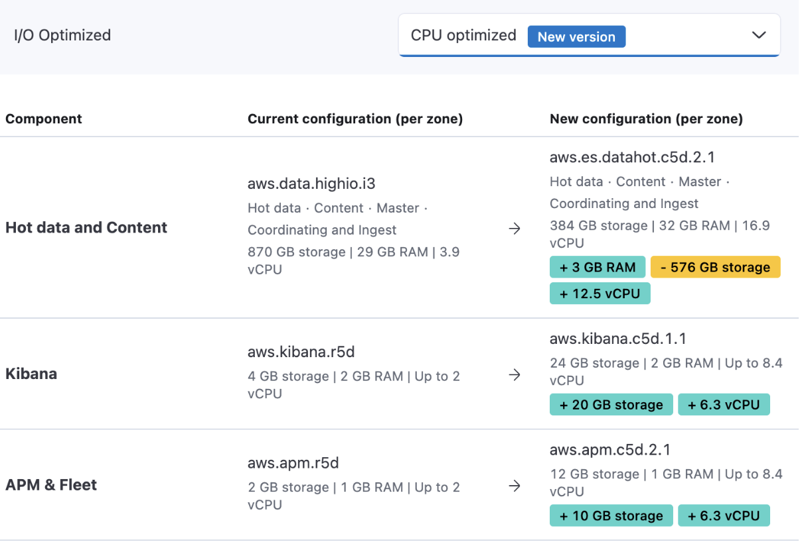

Change hardware profilesedit
Deployment hardware profiles deploy the Elastic Stack on virtual hardware. Each hardware profile has a different blend of storage, RAM, and vCPU.
Elastic Cloud regularly introduces new hardware profiles to provide:
- More optimal hardware for applications in the Elastic Stack.
- Cost efficiencies when new hardware from Cloud providers becomes available.
The Elastic Cloud console indicates when a new version of a hardware profile is available in the overview page for your deployment, under the Hardware profile section.
Change the hardware profile using the Elastic Cloud consoleedit
Upgrade to the newest version of your current hardware profileedit
Note that if there’s no indication that a newer version is available, that means that your deployment is already running on the latest version of that hardware profile.
-
On the deployment overview page, next to your current hardware profile where there is indication of a newer available version, select Edit.
 -
Preview the changes for the new hardware profile version.
The configuration screen summarizes hardware changes for each component of your deployment.
 - Select Update to apply the change.
Change to a different hardware profileedit
When the current hardware profile of your deployment isn’t the most optimal one available for your usage, you can change it as follows:
- On the deployment overview page, next to your current hardware profile, select Edit.
-
Select the hardware profile you wish to change to. The configuration screen summarizes hardware changes for each component of your deployment.
 - Select Update to apply the change.
If your deployment is configured for high availability, the hardware profile change does not impact your ability to read and write from the deployment as the change is rolled out instance by instance.
Change the hardware profile using the APIedit
Prerequisites:
-
A valid Elastic Cloud API key (
$EC_API_KEY) -
The deployment ID of the deployment you wish to modify (
{deployment_id})
Replace those values with your actual API key and deployment ID in the following instructions.
-
Get the current API payload for your deployment.
curl \ -H "Authorization: ApiKey $EC_API_KEY" \ "https://api.elastic-cloud.com/api/v1/deployments/{deployment_id}" -
Using the API payload for your deployment, determine the following:
-
Your current
deployment_templateID. The template ID corresponds to the hardware profile used for your deployment."resources":{ "elasticsearch":[ { "ref_id":"main-elasticsearch", "id":"$CLUSTER_ID", "region":"gcp-us-central1", "info":{ "cluster_id":"$CLUSTER_ID", "cluster_name":"$CLUSTER_NAME", "deployment_id":"$DEPLOYMENT_ID", "plan_info":{ "current":{ "plan":{ "deployment_template":{ "id":"gcp-cpu-optimized-v5" }, -
The region that your deployment is in:
"resources":{ "elasticsearch":[ { "ref_id":"main-elasticsearch", "id":"$DEPLOYMENT_ID", "region":"gcp-us-central1",
-
-
Check the hardware profiles available for the region that your deployment is in and find the template ID of the deployment hardware profile you’d like to use.
If you wish to update your hardware profile to the latest version available for that same profile, locate the template ID corresponding to the
deployment_templateyou retrieved at step 2, but without the version information. For example, if your deployment’s current hardware profile isgcp-cpu-optimized-v5, usegcp-cpu-optimizedas a template ID to update your deployment. -
Get the API payload for your deployment based on the new template ID.
curl -XGET https://api.elastic-cloud.com/api/v1/deployments/{deployment_id}/migrate_template?template_id={new_template_id} \ -H "Authorization: ApiKey $EC_API_KEY" > migrate_deployment.json -
Use the payload returned to update your deployment to use the hardware profile.
curl -XPUT https://api.elastic-cloud.com/api/v1/deployments/{deployment_id} \ -H "Authorization: ApiKey $EC_API_KEY" \ -H 'Content-Type: application/json' \ -d @migrate_deployment.json
List of hardware profilesedit
Storage optimizededit
Your Elasticsearch data nodes are optimized for high I/O throughput. Use this profile if you are new to Elasticsearch or don’t need to run a more specialized workload. You can find the exact storage, memory, and vCPU allotment on the hardware details page for each cloud provider.
Ideal use case
Good for most ingestion use cases with 7-10 days of data available for fast access. Also good for light search use cases without heavy indexing or CPU needs.
Storage optimized (dense)edit
Your Elasticsearch data nodes are optimized for high I/O throughput. You can find the exact storage, memory, and vCPU allotment on the hardware details page for each cloud provider.
Ideal use case
Ideal for ingestion use cases with more than 10 days of data available for fast access. Also, good for light search use cases with very large data sets.
CPU optimizededit
This profile runs CPU-intensive workloads faster. You can find the exact storage, memory, and vCPU allotment on the hardware details page for each cloud provider.
Ideal use case
Consider this configuration for ingestion use cases with 1-4 days of data available for fast access and for search use cases with indexing and querying workloads. Provides the most CPU resources per unit of RAM.
CPU optimized (ARM)edit
This profile is similar to CPU optimized profile but is powered by AWS Graviton2 instances. You can find the exact storage, memory, and vCPU allotment on the hardware details page for each cloud provider.
Ideal use case
Consider this configuration for ingestion use cases with 1-4 days of data available for fast access and for search use cases with indexing and querying workloads. Provides the most CPU resources per unit of RAM.
Vector search optimized (ARM)edit
This profile is suited for Vector search, Generative AI and Semantic search optimized workloads. You can find the exact storage, memory, and vCPU allotment on the hardware details page for each cloud provider.
Ideal use case
Optimized for applications that leverage Vector Search and/or Generative AI. Also the optimal choice for utilizing ELSER for semantic search applications. Broadly suitable for all semantic search, text embedding, image search, and other Vector Search use cases.
General purposeedit
This profile runs CPU-intensive workloads faster . You can find the exact storage, memory, and vCPU allotment on the hardware details page for each cloud provider.
Ideal use case
Suitable for ingestion use cases with 5-7 days of data available for fast access. Also good for search workloads with less-frequent indexing and medium to high querying loads. Provides a balance of storage, memory, and CPU.
General purpose (ARM)edit
This profile is similar to the General purpose profile but is powered by AWS Graviton2 instances. You can find the exact storage, memory, and vCPU allotment on the hardware details page for each cloud provider.
Ideal use case
Suitable for ingestion use cases with 5-7 days of data available for fast access. Also good for search workloads with less-frequent indexing and medium to high querying loads. Provides a balance of storage, memory, and CPU.